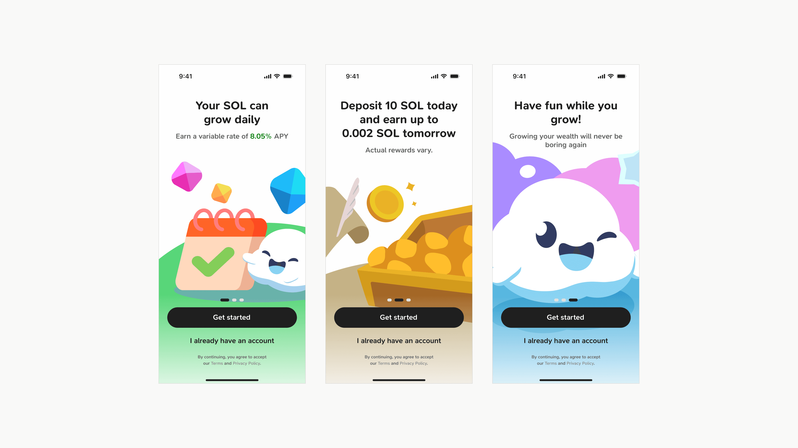
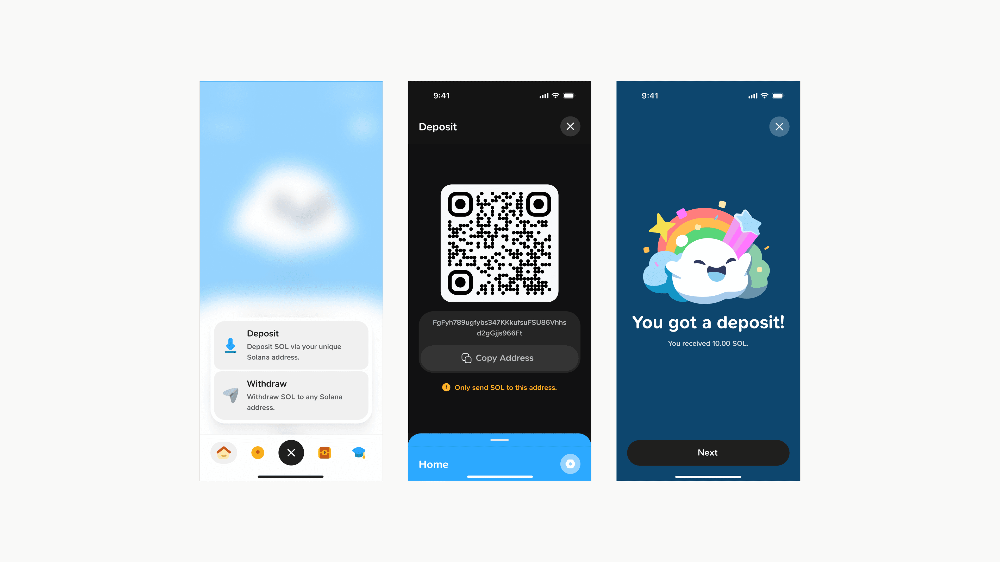
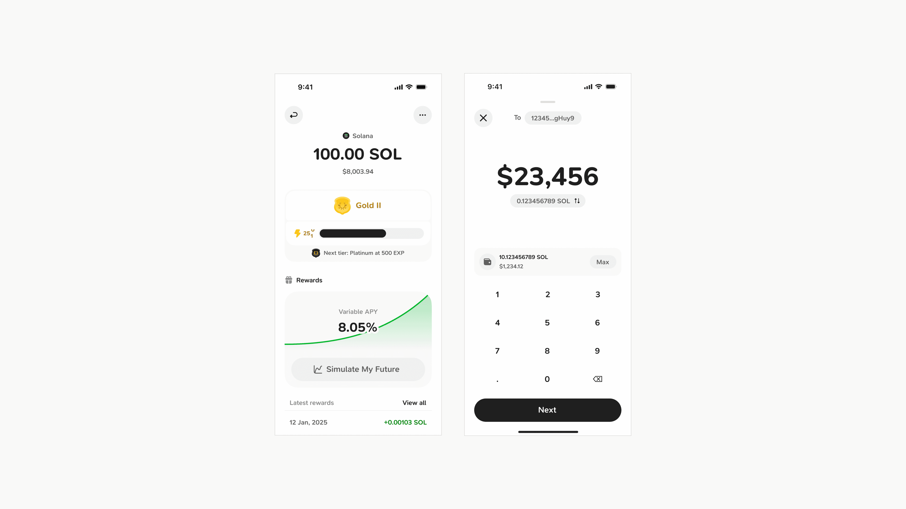
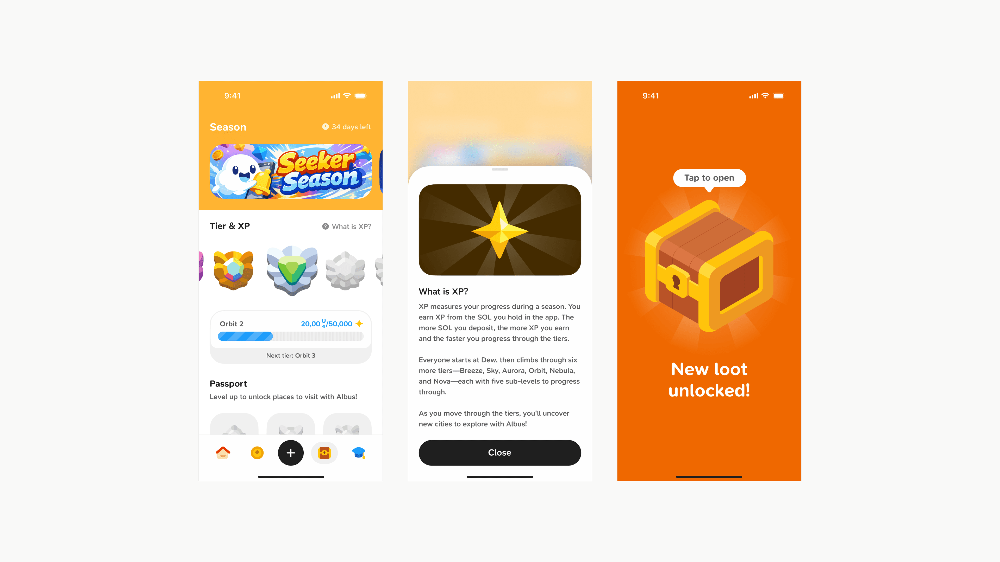
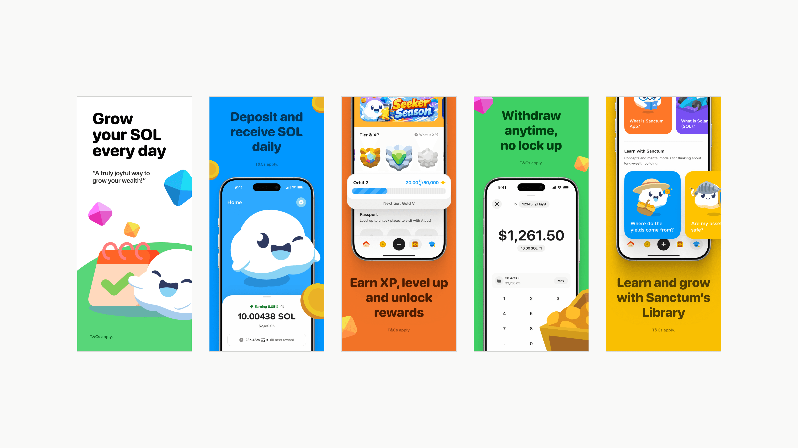
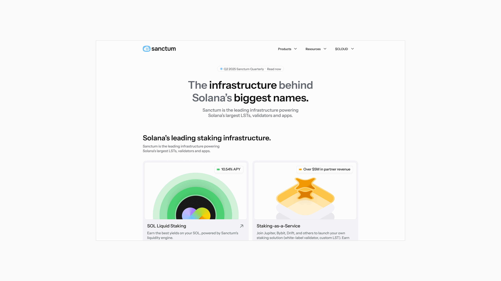
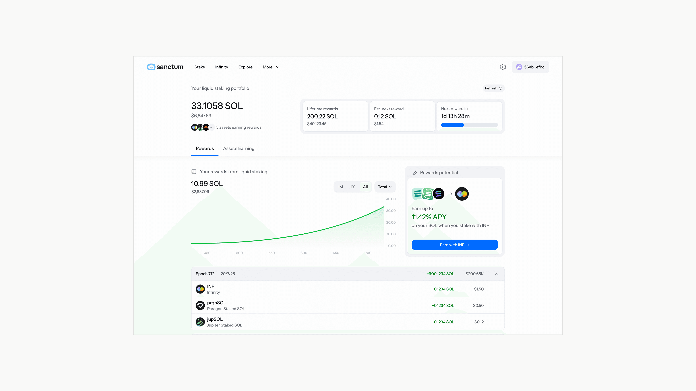
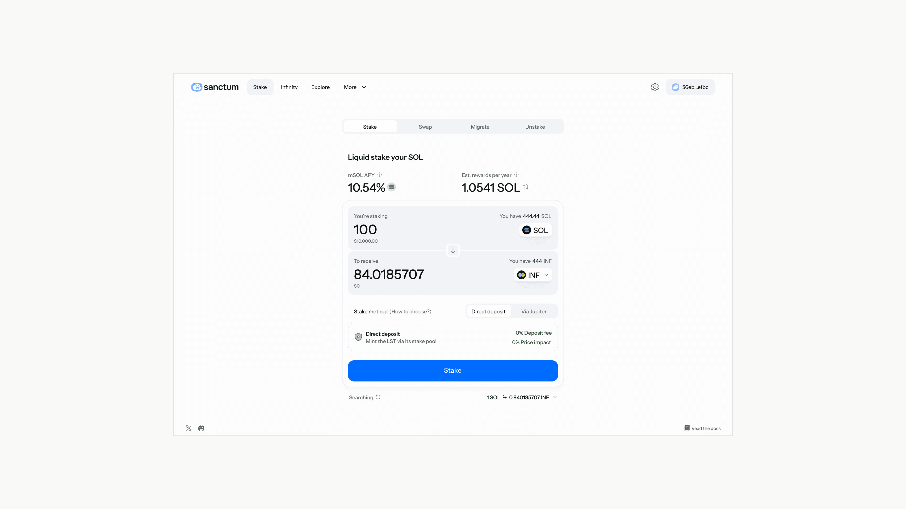
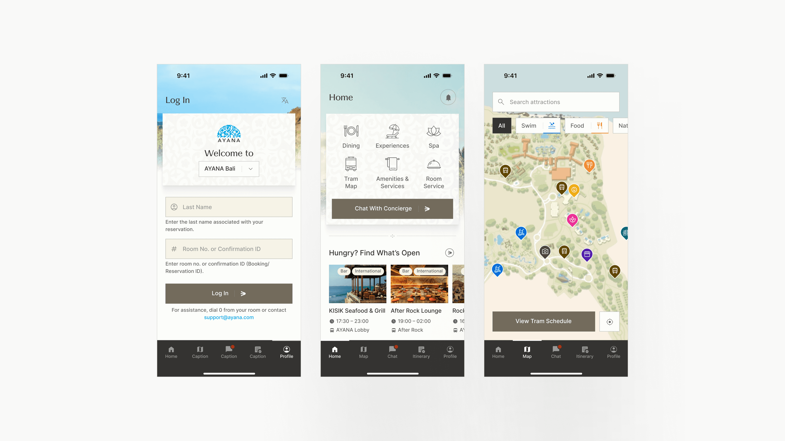
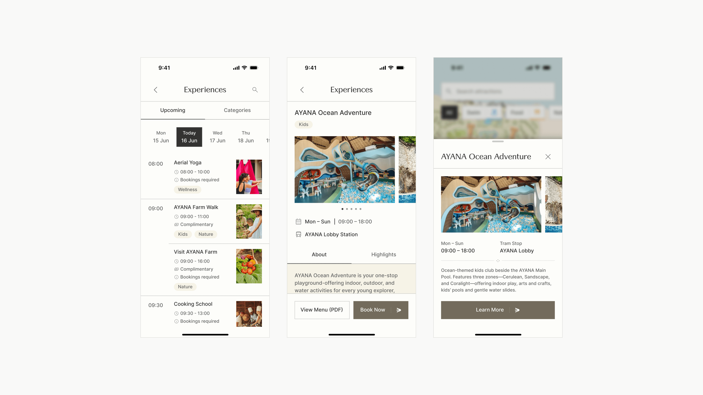

What Does It Mean to Do Your Best Work?
Reflections on obsessive design standards, craftsmanship, and why software built with genuine care always wins.
My dream is to contribute to the world by shipping products that simplify people's lives as technology rapidly advances.






Work
End-to-end product design for Sanctum’s mobile app, from icons and design system to product flows and features, marking Sanctum’s entry into consumer mobile.



Work
Responsive web design, brand and design system for Sanctum, spanning identity, landing pages and the core web app. Built the design foundations and team from zero as Sanctum grew into one of the largest protocols on Solana.

Personal Project
Designed and built a dynamic-island-style macOS app to help with my focus.
Latest version: v0.2.1, desktop only


Work
Gateway is Sanctum’s expansion into the transaction-landing market. Designed the logo and responsive landing page, working with developers to make a technical product more approachable while staying true to Sanctum’s visual language.


Freelance
Redesigned Elfa.ai's design system for a more polished web experience as it scales AI trading to the masses.


Freelance
Redesigned the iOS app for AYANA, one of the top luxury resort destinations in the world.